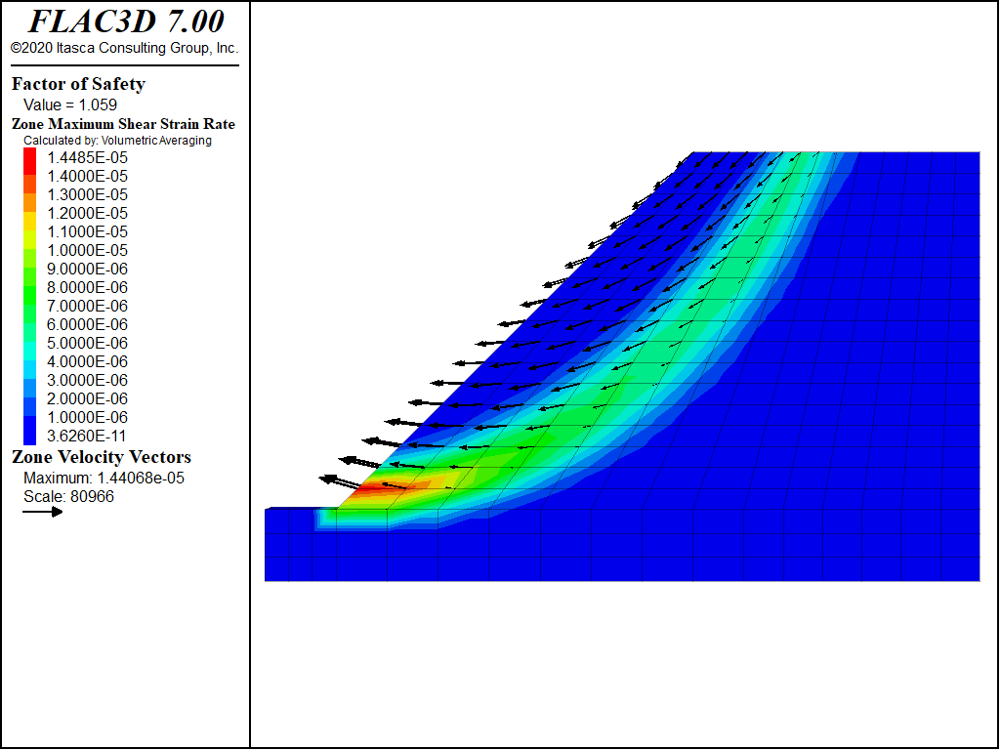

技巧与建议
使用 FLAC3D 解决问题时，优化模型以实现最高效分析十分重要。本节提出若干改进模型运行的建议，并介绍准备 FLAC3D 计算时应避免的常见问题。
1. 检查模型运行时间
FLAC3D 的求解时间与 \(N^{4/3}\) 成正比，其中 \(N\) 为网格单元数量。该公式适用于求解平衡状态的弹性问题。对于塑性问题，运行时间会有所变化，但变化不大；如果持续发生塑性流动，则可能长得多。必须检查计算机对特定模型的计算速度。一个简单方法是运行下文（below）的基准测试，再根据网格单元数量插值，用该速度估计具体模型的计算速度。
2. 对运行时间的影响
以下情况会使 FLAC3D 收敛更慢：
- 网格单元材料内部，或网格单元、结构构件和接触面之间存在较大刚度差异；或
- 网格单元尺寸存在较大差异。
这些差异越大，程序效率越低。详细分析前，应研究刚度差异的影响。例如，可以用一系列赋予恒定速度的固定网格点替代非常刚硬的加载板。（请记住，施加网格单元面条件（zone face apply） 或 zone gridpoint fix 命令用于固定速度，而非位移。）考虑地下水会增加表观力学体积模量（见流固相互作用（Fluid-Mechanical Interaction）一节）。
对于因材料性质或网格单元尺寸而形成的小型高刚度区域，要求其完全收敛与否，可能对所关注的模型总体响应没有明显影响。此时，采用 convergence 求解准则并提高该区域的 ratio-target，可能显著减少所需运行时间。与往常一样，应仔细分析模型响应，确保这一附加误差可接受。
3. 网格划分密度的考虑
FLAC3D 使用常应变单元。如果应力或应变梯度较高，就需要许多网格单元表示变化的分布。应以不同网格划分密度运行同一问题，检查其影响。
尽量使网格划分均匀，尤其在关注区域内。避免纵横比大于 5:1 的狭长网格单元，也应避免网格单元尺寸突变（即采用平滑渐变网格）。配合 zone create 命令使用 ratio 关键字，使网格单元尺寸从细网格区域向粗网格区域平滑渐变。如果已通过 加密网格单元（zone densify） 加密网格单元，建议使用 gradient-limit 关键字，尽量减小网格单元尺寸梯度。
4. 自动检测平衡状态
如达到平衡（Reaching Equilibrium）所述，使用 求解模型（model solve） 命令时，建议采用 convergence 1.0 限值准则。但应始终记录最关注区域的位移和速度时程，判断是否能更早达到足够平衡，或是否仍需继续循环。先求解至 convergence 为 100 或更高，再检查响应，是良好做法。绘制收敛值等值面，查看模型哪些位置收敛困难，有助于判断为提高效率应优先调整哪些部位。
默认力比限值也用于检测热计算和流体流动计算的稳态解。热计算中，评估的是不平衡热通量和施加热通量的大小，而非不平衡力与施加机械力。流体流动计算中，则评估不平衡流量和施加流量的大小。
5. 阻尼选择的考虑
静力分析的默认力学阻尼为局部阻尼（见力学阻尼（Mechanical Damping）主题）。当多数网格点的速度分量周期性过零时，这种阻尼最有效地消除动能，因为质量调整过程依赖速度符号变化。局部阻尼是一种非常高效的算法，可在不引入错误阻尼力的情况下获得静力平衡解（见 Cundall 1987）。
如果求解最终状态中，网格较大区域具有非零速度分量，则默认阻尼可能不足以使模型达到平衡。当网格存在显著刚体运动时，称为组合阻尼的另一种阻尼方式，比局部阻尼更有利于收敛至稳态。例如，蠕变模拟中，或很刚硬的结构加固附着于因开挖而运动的软土时，可能出现这种情况。使用 单元力学组合阻尼命令（zone mechanical damping combined） 命令启用组合阻尼。组合阻尼消除动能的效率较低，因此应注意尽量减小系统的动力激励（见圆形隧道的逐步开挖（gradual excavation of a circular tunnel）示例）。可通过 单元力学阻尼局部（zone mechanical damping local） 命令切回默认阻尼。
6. 检查模型响应
FLAC3D 展示类似物理系统将如何表现。应经常开展简单测试，验证实际操作是否符合您的设想。例如，如果加载条件和几何形状对称，确保响应也对称。修改模型后，执行少量计算步（例如 50 或 100 步），验证初始响应的符号和位置正确。对预期应力或位移量级进行粗略估算，并与 FLAC3D 输出比较。
如果对模型施加强烈冲击，就会得到剧烈响应。如果对模型采取物理上不合理的操作，就应预期出现异常结果。如果某个分析阶段得到意外结果，应回顾此前各步操作。
继续模型模拟之前，应批判性地检查输出。例如，除了某个角部网格单元速度很大之外，其余一切似乎合理，也应先弄清原因再继续。这种情况下，可能是某个边界网格点没有正确固定。
7. 初始化变量
对于包含多个不同开挖阶段的模拟，常见做法是在不同计算之间初始化网格点位移，以便解释结果。这是可行的，因为程序计算过程中不需要位移——位移由网格点速度计算，只为方便用户使用。
但初始化速度是另一回事。如果网格点速度被固定为某个常值，在另行设置前会始终保持该值。因此，不要只是为了清除速度就将网格速度初始化为零——这会影响模拟结果。但有时将速度设为零确实有用，例如消除全部动能。
8. 尽量减小瞬态效应对静力分析的影响
静力分析中，瞬态波可能使塑性模型经历定义不明确的应力路径（可能触发不真实的破坏）。因此，通常应在每个阶段逐渐趋近解，即在问题条件突然变化时，尽量减小瞬态波影响，使求解更为“静态”。[1]
使 FLAC3D 求解更接近静态的建议方法，是使用 单元松弛开挖（zone relax excavate） 开挖区域，并在施加或降低荷载时使用 施加网格单元面条件（zone face apply） 的 servo 选项。发生突然变化时（例如将网格单元设为空来模拟开挖），不建议先将强度性质设为高值、步进至平衡，再将性质恢复为真实值。后一种方法并没有在应力空间中明确规定将网格单元带入屈服面以内的方向，整个过程不符合物理实际。
9. 更改材料模型
FLAC3D 不限制模拟期间可以使用的不同材料模型数量。对于您所用 FLAC3D 版本支持的最大规模网格，程序容量设计允许在需要时为每个网格单元采用不同材料。
10. 计算具有原位应力和重力的问题
许多问题需要对模型同时施加原位应力和重力。例如深部充填采矿：岩体承受很高的原位应力场（对于有限网格尺寸，其重力应力可忽略），但形成的充填矿柱会产生重力应力，可能在荷载作用下坍塌。这些模拟中（与所有施加重力的模拟一样）需要注意，必须至少将网格中的三个点固定在空间中；否则整个网格会因重力而平移。如果发现整个网格沿重力加速度向量方向平移，很可能忘记将网格固定在空间中（例如见移除材料时的上浮（uplift when material is removed））。
11. 确定极限荷载
为确定极限荷载，采用“应变控制”而非“应力控制”边界条件通常更好，即施加恒定速度并测量反力，而非施加力并测量位移。当施加荷载接近极限荷载时，会坍塌的系统变得难以控制。真实系统和模型系统均如此。
12. 确定安全系数
在 FLAC3D 中，对于任意选定参数，可以通过给定条件下计算值与导致破坏的值之比确定安全系数。例如：
请注意，始终用较大值除以较小值（假定系统在实际条件下不破坏）。破坏的定义必须由用户建立。Dawson and Roth (1999) 及 Dawson et al. (1999) 比较了这种基于强度折减确定安全系数的方法与基于极限分析解的方法。另见应用示例边坡曲率对稳定性的影响（Influence of Slope Curvature on Stability）。
在 FLAC3D 中，通过 设置安全系数分析参数（model factor-of-safety） 命令实现确定安全系数的强度折减法。该命令采用 Dawson et al. (1999) 所述区间夹逼方法，自动搜索安全系数。在 FLAC3D 计算的任何阶段都可发出 设置安全系数分析参数（model factor-of-safety） 命令，只要每个非空网格单元中的本构模型都支持性质缩放。求解过程中性质会改变，但计算完成，或按 Esc 键提前终止 factor-of-safety 搜索时，将恢复原始状态。
FLAC3D 执行 设置安全系数分析参数（model factor-of-safety） 命令时，会持续在屏幕上输出 \(F\) 的夹逼区间值，便于查看求解进展。如果按 Esc 键终止，求解过程结束，并显示当前最佳 fos 估计值。程序还生成对应最后一个非平衡状态的保存文件，以便绘制速度向量等，从而显示破坏模式。
下例基于 Dawson et al. (1999) 的稳定性分析示例，说明此方法的工作方式。对应项目文件为“FactorOfSafety.f3prj”。计算在 \(F\) = 1.06 时停止。随后图示绘制剪应变率等值线和速度向量，可据此识别破坏面。
边坡稳定性分析的安全系数计算
model new
model large-strain off
; 创建网格单元
zone create brick point 0 (0, 0,0) point 1 (2,0,0) ...
point 2 (0,0.5,0) point 3 (0,0,2) ...
size 3 1 3
zone create brick point 0 (2, 0,0) point 1 (13.4,0,0) ...
point 2 (2,0.5,0) point 3 ( 2,0,2) ...
size 8 1 3
zone create brick point 0 (13.4, 0,0) point 1 (20 ,0,0) ...
point 2 (13.4,0.5,0) point 3 (13.4,0,2) ...
size 6 1 3
zone create brick point 0 ( 2 , 0, 2) point 1 (13.4, 0, 2) ...
point 2 ( 2 ,0.5, 2) point 3 (12 , 0,12) ...
point 4 (13.4 0.5, 2) point 5 (12 ,0.5,12) ...
point 6 (16 , 0,12) point 7 (16 ,0.5,12) ...
size 8 1 17
zone create brick point 0 (13.4, 0, 2) point 1 (20, 0,2 ) ...
point 2 (13.4,0.5, 2) point 3 (16, 0,12) ...
point 4 (20 ,0.5, 2) point 5 (16,0.5,12) ...
point 6 (20 , 0,12) point 7 (20,0.5,12) ...
size 6 1 17
zone face skin
; 本构模型和参数
zone cmodel assign mohr-coulomb
zone property density 2000.0 bulk 1e8 shear 3e7 cohesion 12380 tension 1e10 ...
friction 20 dilation 20
; 边界条件
zone face apply velocity-normal 0 range group 'East' or 'West'
zone face apply velocity-normal 0 range group 'North' or 'South'
zone face apply velocity (0,0,0) range group 'Bottom'
; 初始条件
model gravity 10
zone initialize-stresses
; 历史
model history name='conv' mechanical convergence
; 求解
model solve convergence 1
model factor-of-safety file 'slope3dfos' associated convergence 1
建议在模型平衡状态下发出 设置安全系数分析参数（model factor-of-safety） 命令，以缩短求解时间并减少可能的伪惯性效应，但这并非必要条件。
FLAC3D 执行 设置安全系数分析参数（model factor-of-safety） 的流程如下。首先，程序确定表征系统响应时间的“代表性步数”（记为 \(N_r\)）。确定 \(N_r\) 时，先将黏聚力设为较大值，大幅改变内部应力，再计算系统恢复平衡所需步数。随后，对给定安全系数 \(F\)，执行 \(N_r\) 步。如果满足平衡条件，则系统处于平衡；否则再执行 \(N_r\) 步，若满足条件则退出循环。将当前 \(N_r\) 步范围内的平均平衡条件值，与此前 \(N_r\) 步的平均力比比较。如果差异小于 10%，则认为系统不平衡，并以新的非平衡 \(F\) 退出循环。如果上述差异大于 10%，则继续按每组 \(N_r\) 步执行，直到：1）差异小于 10%；2）已执行六组；或 3）满足平衡条件。第一种情况的依据是，平均力比正收敛至高于平衡对应值的稳定值，因此系统必然持续运动。FISH 内置变量 全局安全系数（global.fos） 允许在执行 设置安全系数分析参数（model factor-of-safety） 期间访问 \(F\) 当前值（见示例此处需要链接到 FISH 手册中的示例 2.18“fos_f 使用示例”）。


图 1：边坡模型最后非平衡状态下的剪应变率等值线和速度向量。
13. 使用体积模量和剪切模量
对于 FLAC3D 中的弹性性质，采用体积模量 \(K\) 和剪切模量 \(G\) 比采用杨氏模量 \(E\) 和泊松比 \(ν\) 更好。
参数对（\(K,G\)）适用于所有不违反热力学原理的弹性材料。参数对（\(E,ν\)）则不适用于某些物理上允许的材料。在一种极端情况下，材料抵抗体积变化却不抵抗剪切；在另一极端情况下，材料抵抗剪切却不抵抗体积变化。第一类材料对应有限 \(K\) 和零 \(G\)，第二类对应零 \(K\) 和有限 \(G\)。但参数对（\(E,ν\)）不能表征这两类材料中的任何一种。如果排除这两种极限情况（通常为 \(ν\) = 0.5 和 \(ν\) = -1），以下方程
关联这两组常数。无论多么接近（但不达到）极限情况，这些方程都成立。无需将它们与可能可行也可能不可行的物理试验关联；方程只是定义比例系数的两种方式所产生的结果。假定某材料抵抗畸变的能力逐渐降低，而抵抗体积变化的能力保持恒定，此时 \(ν\) 趋近 0.5。仍必须满足方程 \(3K(1 - 2ν) = E\)。从代数而非物理角度，有两种可能：要么 \(E\) 保持有限非零而 \(K\) 趋于任意大值；要么 \(K\) 保持有限而 \(E\) 趋于零。排除第一种可能，因为所有已知材料的可压缩性都有极限（例如泊松比为 0.5 的水，其体积模量为 2 GPa）。因此只剩第二种情况，此时尽管假定材料主要的弹性抵抗模式不变，\(E\) 却发生剧烈变化。由此推知，参数（\(E,ν\)）不足以表达材料行为。
FLAC3D 运行时间基准测试
已在多种不同计算机上测试 FLAC3D。这里比较采用 Mohr-Coulomb 材料、含 624,000 个网格单元的基础模型的计算速率。模型运行 100 步，由 FISH 函数计算速率。下例给出数据文件，随后表格汇总各计算机的计算速率。
基准测试数据文件——“timing-test.dat”
model new
model large-strain off
; 创建网格单元
zone create cylindrical-shell point 0 (0, 0, 0) point 1 ( 0,15, 0) ...
point 2 (0, 0,15) point 3 (15, 0, 0) ...
point 4 (0,15,15) point 5 (15, 0,15) ...
point 8 (0, 3, 0) point 9 ( 3, 0, 0) ...
point 10 (0, 3,15) point 11 ( 3, 0,15) ...
size 100 80 60 30 ...
ratio 1.05 1.1 1 0.875 fill group 'cyl'
zone face skin
zone face group 'slab' slot 'app' range group 'Top' group 'cyl'
; 本构模型和参数
zone cmodel assign mohr-coulomb
zone property bulk 2e8 shear 1e8 cohesion 1e5
zone property friction 20 dilation 20 tension 1e10
; 边界条件
zone face apply velocity-normal 0 range group 'West'
zone face apply velocity-normal 0 range group 'South'
zone face apply velocity-normal 0 range group 'Bottom'
zone face apply velocity-normal 0 range group 'North'
zone face apply velocity-normal -2e-5 range group 'slab'
; 初始条件
zone initialize stress xx -1e6 yy -1e6 zz -1e6
; 测量速率
fish define startClock
global start = time.clock
end
fish define endClock
global time = (global.cycle * zone.num) / ((time.clock-start) / 100)
end
fish callback add startClock event zone_update_complete
fish callback add endClock event solve_complete
model cycle 100
[io.out('Calculation rate = '+string(time/1000)+' kilo-zones/sec')]
尾注
| [1] | 情况并非始终如此。变化中的非线性系统的“路径相关性”可能很重要。见局部化、物理不稳定性与路径相关性（Localization, Physical Instability, and Path-Dependence）中的讨论。 |
| 这些内容对您有帮助吗？… | FLAC3D © 2019, Itasca | 原文更新于 2020 年 10 月 8 日 |